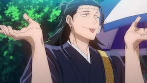

Geto Suguru
Monkeys?
Suguru Geto hated non-sorcerers, usually referring to them as monkeys
. He felt sorcerers are the superior race and humanity's next stage of evolution. He was smug and extremely condescending towards normal humans, using fake personas to lure in vulnerable people who were cursed.
Suguru attempted to maintain his ideology but his path became more and more unclear as time went on. Satoru became the strongest alone and Suguru started going off on more dangerous missions alone. He felt caught in an endless cycle of exorcism and consumption.
Actually Kenjaku..
Geto was sentenced to death because he massacred an entire village and killed his parents. Due to improper disposal of Geto's body after being excuted by Gojo, his body was taken over by Kenjaku. All bodies taken over by Kenjaku are recognizeable by the stitches on their forehead.
Click to read about Kenjaku's personality
While Kenjaku is uncaring and aloof when it comes to things that disinterest him, he's very talkative when it comes to himself or his interests. Kenjaku has a habit of going on long monologues and enjoys drawing out small talk without anyone, even his enemies. This can vary from casually educating someone on the state of the world or ruthlessly taunting his opponents. Kenjaku's demeanor is often optimistic and outspoken, but it carries an aura of condescension, which often infuriates those he is talking to, even his allies.
Uraume in particular finds Kenjaku annoying and doesn't enjoy his company at all despite them being longtime comrades. Kenjaku is unapologetically arrogant because he possesses skills that back it up. This empowers him to carry his aura of superiority into dangerous situations. He will attack and severely injure someone all while casually explaining his ideals, goals, or abilities as if he's educating them. Even when faced with Gojo, Kenjaku made jokes and casually taunted him as if Gojo didn't confront him with the intent to kill.
Kenjaku is one of the primary antagonists of the Jujutsu Kaisen series. He is an ancient curse user who has existed for over a thousand years using his innate technique, which allows him to transplant his brain into other people to control them. He has inhabited different individuals throughout the centuries and assumed their identities.
Among those he has possessed include the blight of the Kamo clan who created the Cursed Womb: Death Paintings, Kamo Noritoshi, the mother of Itadoru Yuji, Itadori Kaori, and Geto Suguru, who's corpse Kenjaku is currently possessing to exploit his Cursed Spirit Manipulation.